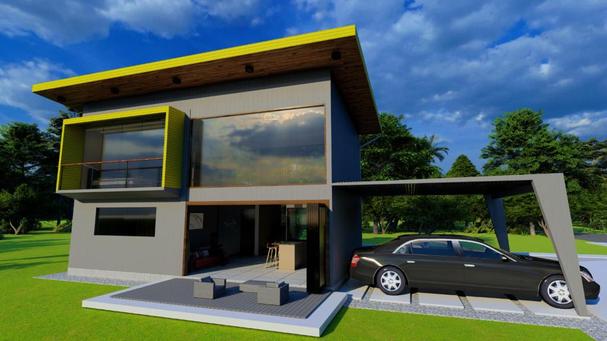

ESTUDIOS PRELIMINARES Y ANTEPROYECTO

En esta etapa nuestro objetivo es entender a profundidad la idea del cliente y sensibilizarnos con aquellos que serán los usuarios del proyecto. Para ello estudiamos el terreno, observamos su entorno y analizamos el marco legal que debemos cumplir. Una vez concluida esta etapa, empezamos a visualizar lo que emerge arquitectónicamente, un proyecto con estética y funcionalidad dentro de los costos para hacerlo viable.